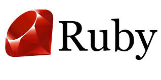
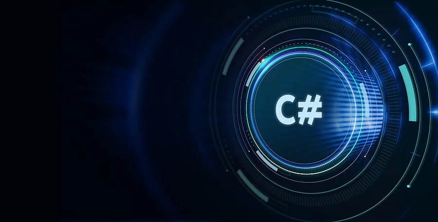
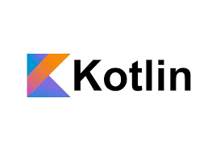
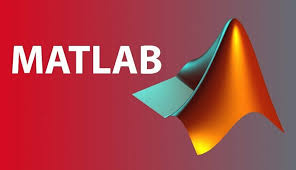
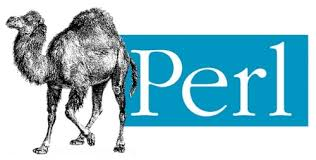
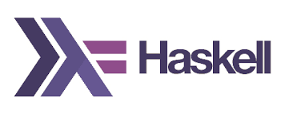

REMOX
REMOX 
C
یکی از قدیمیترین و سریعترین زبانهای سطح پایین.
پایه و اساس خیلی از زبانهای دیگه مثل C++, Java , Python محسوب میشه.
در سیستمعاملها، کرنلها و نرمافزارهای نزدیک به سختافزار استفاده میشه.

++C
نسخه توسعهیافتهی C با پشتیبانی از برنامهنویسی شیءگرا.
برای ساخت بازیها، موتورهای گرافیکی و نرمافزارهای سنگین استفاده میشه.
ترکیب سرعت C با قابلیتهای مدرنتر.

Java
زبان پرکاربرد در اپلیکیشنهای اندروید و نرمافزارهای سازمانی.
روی JVM اجرا میشه، یعنی مستقل از سیستمعامل.
شیءگرا، امن و مقیاسپذیر.

Python
یکی از محبوبترین زبانها به خاطر سادگی و کاربردهای زیاد.
در هوش مصنوعی، دیتا ساینس، وبدیولپ، اتوماسیون و آموزش استفاده میشه.
خوانایی کد بالایی داره و برای یادگیری عالیه.

JavaScript
زبان اصلی وب برای فرانتاند.
داخل مرورگر اجرا میشه و برای داینامیک کردن صفحات وب استفاده میشه.
با Node.js میشه توی بکاند هم ازش استفاده کرد.

TypeScript
نسخهی توسعهیافتهی JavaScript با قابلیت تایپ ایمنی.
کدها رو قابل نگهداریتر میکنه، مخصوصاً در پروژههای بزرگ.
به JS کامپایل میشه.
PHP
بیشتر برای توسعه وب و ساخت وبسایتهای داینامیک استفاده میشه.
فریمورکهای معروفی مثل Laravel داره.
زبان اصلی خیلی از سایتهای قدیمی و حتی وردپرس.

Ruby
زبانی ساده و خوانا با فریمورک معروف Ruby on Rails.
بیشتر برای توسعه وب سریع استفاده میشه.
جامعه کوچیکتری نسبت به JS و Python داره.

#C
توسط مایکروسافت ساخته شده، مخصوصاً برای ویندوز و Unity.
شبیه جاواست ولی توی اکوسیستم مایکروسافت استفاده گسترده داره.
قدرتمند و مناسب برای اپلیکیشنهای دسکتاپ، موبایل و وب.

Go (Golang)
ساختهی گوگل، خیلی سریع و سبک.
مناسب برای سرویسهای بکاند و اپلیکیشنهای کلود.
سینتکس ساده ولی کارایی بالا.

Rust
زبان مدرن با تمرکز روی امنیت حافظه و سرعت.
ترکیب قدرت C++ با امنیت بیشتر.
توی سیستمعاملها و نرمافزارهای حساس به سرعت استفاده میشه.
Swift
زبان رسمی اپل برای توسعه اپلیکیشنهای iOS و macOS.
سریع، مدرن و امنتر از Objective-C.
جامعهی خیلی فعالی داره چون اپ استور بزرگه.

Kotlin
زبان رسمی اندروید.
مختصرتر و مدرنتر از Java.
قابلیت همکاری مستقیم با Java داره.

SQL
زبان مخصوص مدیریت و کار با دیتابیسهای رابطهای.
برای کوئری گرفتن، اضافه کردن یا تغییر دیتا استفاده میشه.
تقریباً هر برنامهای که دیتابیس داره به SQL نیاز داره.
R
زبان مخصوص تحلیل داده و آمار.
برای مصورسازی داده و کارهای علمی استفاده میشه.
توی جامعهی آکادمیک خیلی محبوبه.

MATLAB
بیشتر برای محاسبات ریاضی، مهندسی و شبیهسازی استفاده میشه.
در صنایع هوافضا، رباتیک و دانشگاهها کاربرد زیاد داره.
تخصصیتر از زبانهای عمومی.

Perl
قدیمی ولی هنوز در اسکریپتنویسی و مدیریت سیستم استفاده میشه.
معروف به چاقوی سوئیسی زبانهای برنامهنویسی.
امروزه کمتر استفاده میشه چون Python و Bash جاشو گرفتن.
Scala
زبانی روی JVM که ترکیبی از شیءگرایی و فانکشنال برنامهنویسیه.
در کلود و بیگدیتا کاربرد داره.
پیچیدهتر از Java ولی قدرتمندتر.

Haskell
زبان فانکشنال خالص.
بیشتر برای تحقیقات علمی و مفاهیم ریاضی استفاده میشه.
در صنعت کمتر ولی در دانشگاه محبوبه.

Dart
زبان اصلی فریمورک Flutter.
ساده و سریع، شبیه JS و Java.
برای وب و دسکتاپ هم قابل استفادهست.
HTML
زبان نشانهگذاری استاندارد برای ساختار صفحات وب.
مسئول نمایش متن، عکس، لینک، جدول و اسکلت کلی وبسایت.
پایهی هر سایت و اپلیکیشن وب محسوب میشه.

CSS
زبان استایلدهی برای زیبا کردن صفحات وب.
رنگها، فونتها، فاصلهها، انیمیشنها و طراحی ریسپانسیو رو مدیریت میکنه.
همراه HTML و JavaScript سهضلعی اصلی توسعه وب فرانتاند رو میسازه.